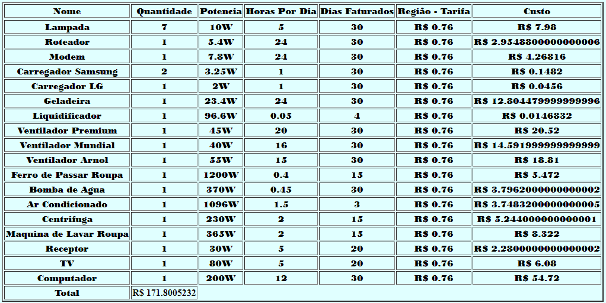

Princípios físicos utilizados
O conteúdo usado para a realização do trabalho é o uso da eletrodinâmica,
focando mais especificamente para o consumo de energia elétrica dentro da eletrodinâmica.
Para saber o consumo de um receptor elétrico (equipamento que recebe a energia e a
transforma de acordo com sua função e objetivo por exemplo:
o ferro de passar roupa que recebe a energia elétrica e a transforma em calor),
primeiramente é necessário e importante identificar o potencial elétrico desse
equipamento que está expresso em W(watts), que é a taxa de transformação
de energia que ele possui, que resumindo é a energia utilizada (joules) por tempo em segundos.
Pelo fato de unidade W ser uma unidade pequena se utiliza como unidade de energia também kWh
onde 1 kWh é igual a 1000W por horas facilitando o cálculo. Para realmente chegar no consumo em kWh
de tarifa de consumo de energia foi necessário utilizar a seguinte fórmula:
Princípios técnicos Programação Web
Para a realização deste trabalho utilizamos das linguagens HTML,CSS e JavaScript.
Com o CSS editamos a formatação e o estilo do site, mudando sua cor, fonte, background,
entre outras formatações. Com o HTML construímos toda a parte de textos, título, tabela,
formulário e preparamos toda a parte visual do site. Com o JavaScript construímos o código
para calcular a fórmula utilizada no experimento e preparamos o preenchimento automático
da tabela.
Prática do trabalho
(como foi realizado a associação dos conceitos físicos e de programação web)
Utilizando os conhecimentos em programação web, juntamente com física, foi-se elaborado um
programa (site) que recebe os dados físicos para inserir na tabela assim gerando o custo de
watts de cada eletrodomésticos, para então gerar o valor total do consumo. Segue como o
programa funciona: os valores que se pede são passados pelo usuário através de um campo de
texto, o programa recebe os valores e passa para a fórmula física de tarifa escrita na
programação JavaScript, em seguida a própria função que possui a fórmula retorna o valor
total.
Prática do trabalho
(como foi realizado a associação dos conceitos físicos e de programação web)
segundo teste para usar de exemplo usando o aluno Wasgton Gomes Pereira que teve como base a tabela:

E com isso podemos perceber que teve uma diferença de aproximadamente três reais referente a sua conta de Luz mensal e
chegamos a conclusão que houve variação do tempo de consumo dos eletrodomésticos.